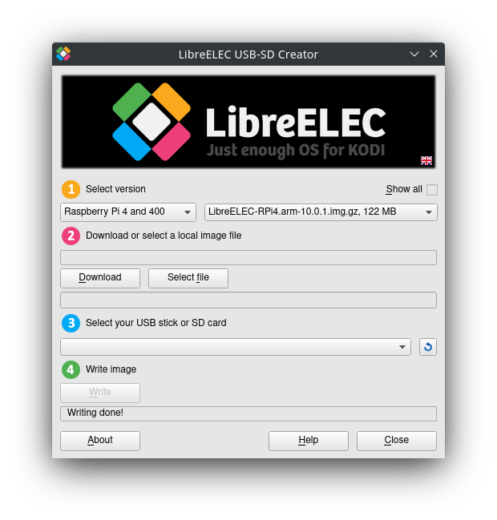
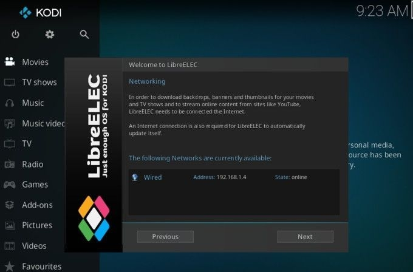
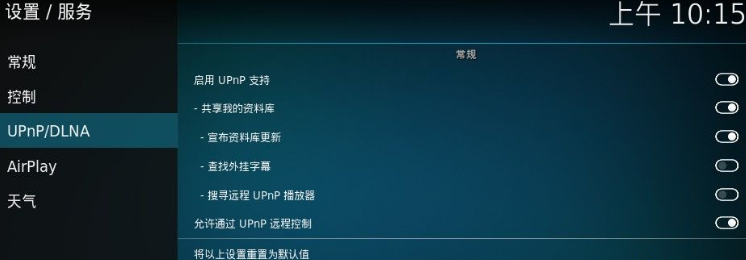
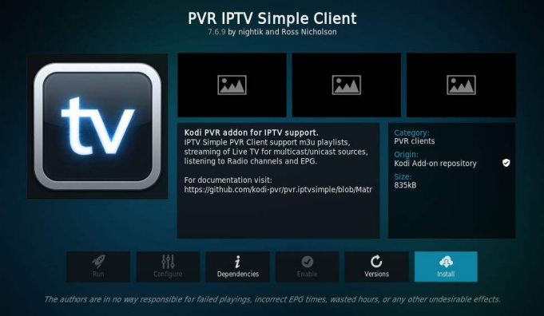

老家的机顶盒到期了，但其低劣的画质和残缺的功能放在2022年实在难以让我为其续费，正好家里装了无线网，打算用闲置的树莓派3B+顶替一下电视盒子
树莓派作为家庭影音系统的最佳解决方案是Kodi，可以通过刷入LibreELEC系统来使用Kodi。
LibreELEC简单来说就是最小限度满足Kodi运行的Linux，LibreELEC是把精简版Linux与kodi集成的媒体中心系统，速度快，cpu占用率低，非常适合性能较差的主机。
烧录系统盘
先去LibreELEC官网下载LibreELEC USB-SD Creator，用于将LibreELEC烧录进SD卡。
尝试过手动下载镜像后用
dd命令和Etcher，但是烧录过程会出问题，建议用官方烧录工具。

我的树莓派是3B+，armv7处理器，这里可以选择Rasberry Pi 4 and 400。
如果选择
Raspberry Pi 2 and 3那么下载的LibreELEC 9包含的Kodi版本会是18（Leia），Leia的Repository很多已经停止维护了，所以这里最好是用搭载了Kodi 19（Matrix）的LibreELEC 10。
烧录完成后直接将SD卡插入树莓派，启动即可进入系统。先配置WiFi，然后按照提示开启SSH和Samba。

除了需要一个显示器，还需要一个控制设备，可以是鼠标，键盘，或是一个免驱的2.4G遥控器（某宝大约20一个）
设置中文
完成配置后首先设置中文，依次进入Setting，Interface，Skin，Fonts，Skin，将default改为Arial based。
这一步必须先完成，不然后续操作会乱码
在主界面Add on中使用Search搜索Chinese中文语言插件，安装后切换成中文。
Web管理界面
在设置中可以开启Web管理界面，然后访问树莓派IP:8080即可使用Web界面控制。
UPnP/DLNA
进入设置，服务，UPnP/DLNA，启动UPnP支持。开启后在手机上用爱奇艺，腾讯视频，Bilibili等APP可以搜索到Kodi盒子进行投屏。

IPTV
安装Kodi上的IPTV客户端，这里推荐PVR IPTV Simple Client，在插件里搜索它安装即可。注意Kodi 19（Matrix）支持的PVR IPTV Simple Client版本已经大于19，安装最新的版本。

去GitHub上找一个电视直播*.m3u源文件，用SMB上传到Kodi的storage/Downloads文件夹，在插件设置中配置*.m3u文件地址。重启系统即可用IPTV播放电视节目了。
亲测树莓派3B+播放本地4K视频流畅。如果是播放IPTV，建议用千兆网接口。
除了PVR IPTV Simple Client，还推荐以下插件：
- Twitch（不知为何它在Kodi上没被墙）
- TED
- YouTube（需要在Kodi中设置代理）
- Radio（收听全世界广播）
代理
Kodi上很多功能（YouTube，Netflix，GoogleDrive，etc.）在墙国用起来很麻烦，需要在内网单独配置一台Socks5/HTTP代理服务器，为了使用方便，我想将代理移到树莓派本地。
我常用的是trojan代理，他可以在本地开启一个socks5代理服务，也就需要在树莓派本地允许trojan。
我先下载了trojan官方Repo，然后在树莓派Ubuntu20.04上编译了trojan可执行程序，通过SSH移植到LibreELEC上，然后./trojan，结果提示：sh: ./trojan: not found
我在本地file trojan:/home/xuranus/Desktop/trojan: ELF 64-bit LSB pie executable, ARM aarch64, version 1 (GNU/Linux), dynamically linked, interpreter /lib/ld-linux-aarch64.so.1, BuildID[sha1]=f2f9a28b495bee82b05178c73cdc82bfa28cc553, for GNU/Linux 3.7.0, not stripped
发现ubuntu20.04编译后的trojan的interpreter是/lib/ld-linux-aarch64.so.1，而libreELEC下缺少它。因为libreELEC是busybox构造的只读系统，没法修改/lib，所以这种方法行不通。
偶然发现按LibreELEC居然支持Docker插件，安装Docker Add-ons后，再次SSH，已经可以使用Docker了。在Docker HUB上找了个arm的trojan镜像teddysun/trojan。将trojan配置文件放在/storage/proxy/config.json，运行容器即可：
docker run -d --network host --name trojan-go --restart=always -v /storage/proxy:/etc/trojan-go teddysun/trojan-go |
用docker container ls查看状态：10624f7d78fe teddysun/trojan-go "/usr/bin/trojan-go …" 2 minutes ago Up 2 minutes trojan-go
说明trojan已经跑起来了。
最后回到libreELEC设置，将代理配置改为127.0.0.1:1080（trojan容器本地占用1080），这时已经可以使用YouTube了。